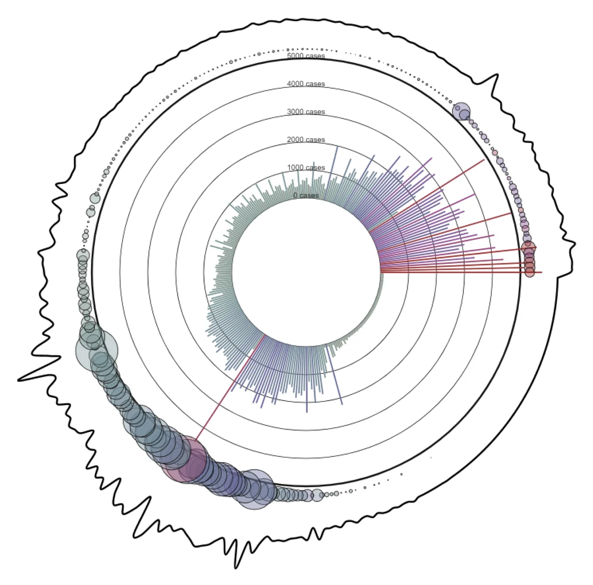

Archive — Data visualization — 2020
COVID-19, one day at a time
Case counts get thrown around without much meaning. This piece draws each day since Canada’s first lockdown, so the numbers read as lives.

Overview
Behind every number is a person.
I’ve been interested in data, and the many ways to visualize it, since I started at UBC. COVID-19 brought a flood of new numbers, and I wanted to make them visual in a way people could easily understand, and that might mean something to them.
At the time I made this, more than 12,000 Canadians had died of COVID-19. I wanted people to step back, see each of them as an individual life, think about their families and everything they lost, and feel compassion.
How to read it
Each line and circle is one day since March 16, 2020.
Lines
Daily cases. The longer the line, the more cases that day.
Circles
Daily deaths, sitting above each day’s line. Bigger circles mean more deaths.
The squiggle
The wavering outline around the piece also traces deaths over time.
The data is the World Health Organization’s daily cases, daily deaths and cumulative deaths for Canada. I converted each date into a count of days since March 16, 2020.
Try it
Drag the slider to draw it, day by day.
Or open it in the p5.js editor.
More from the archive
noggn →